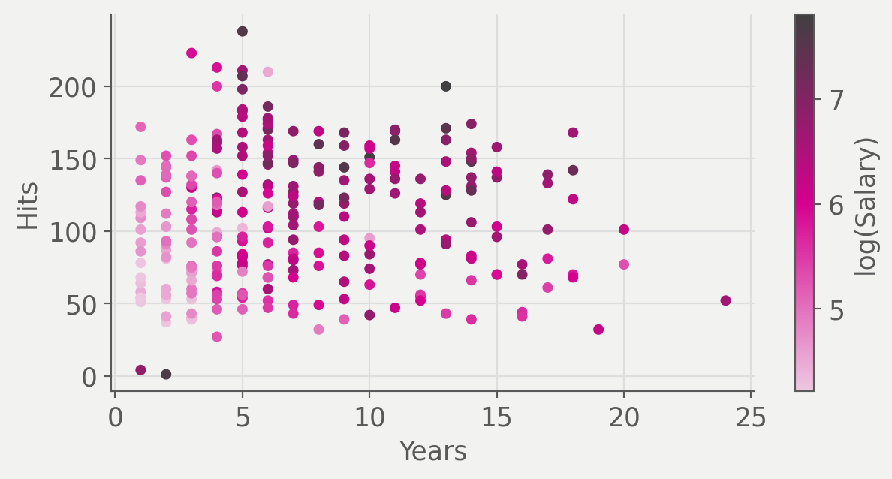
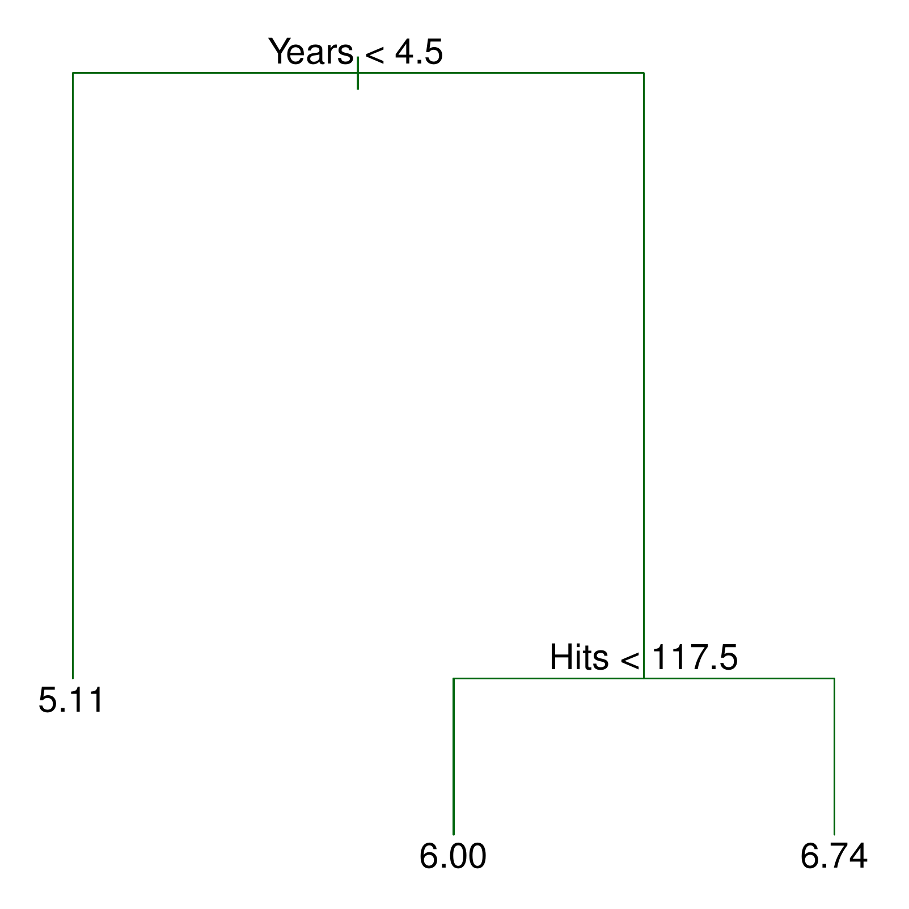
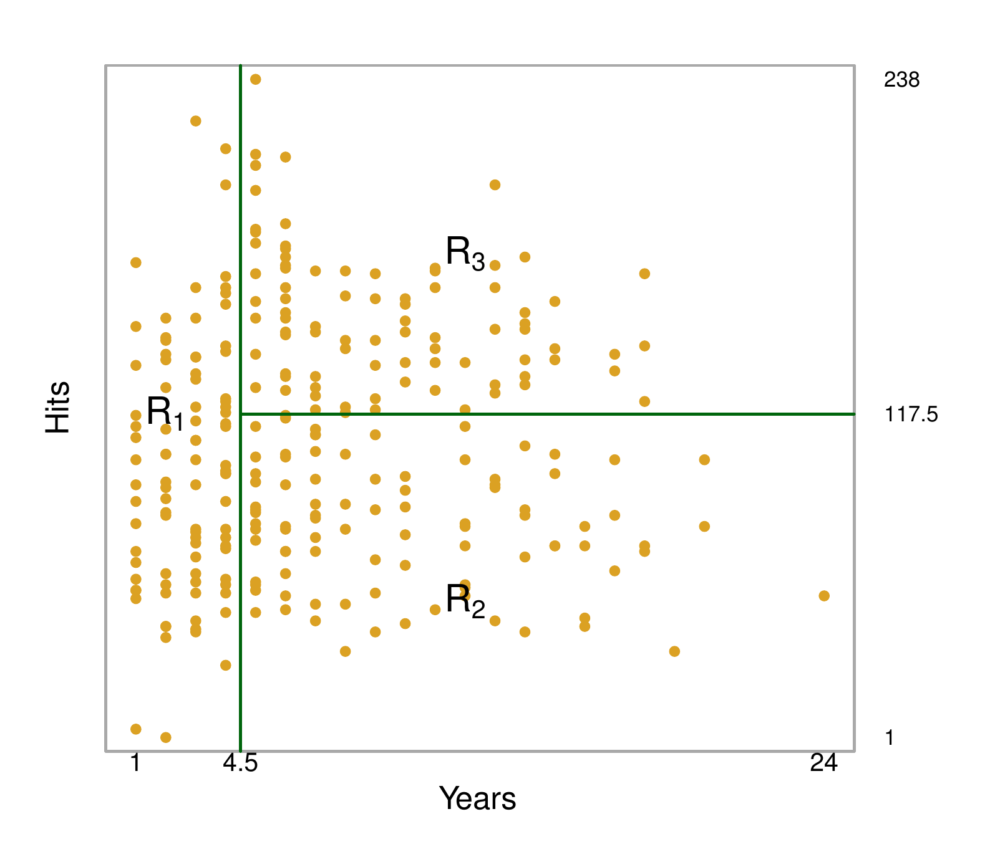
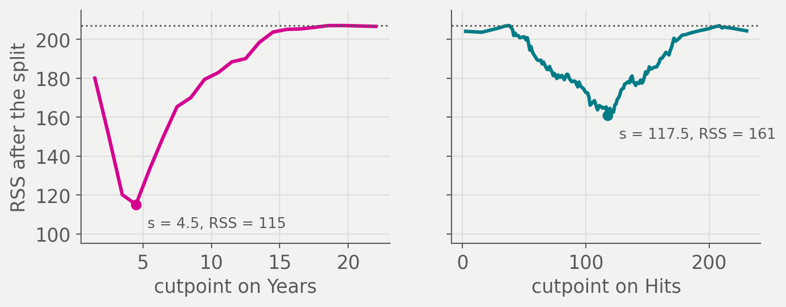
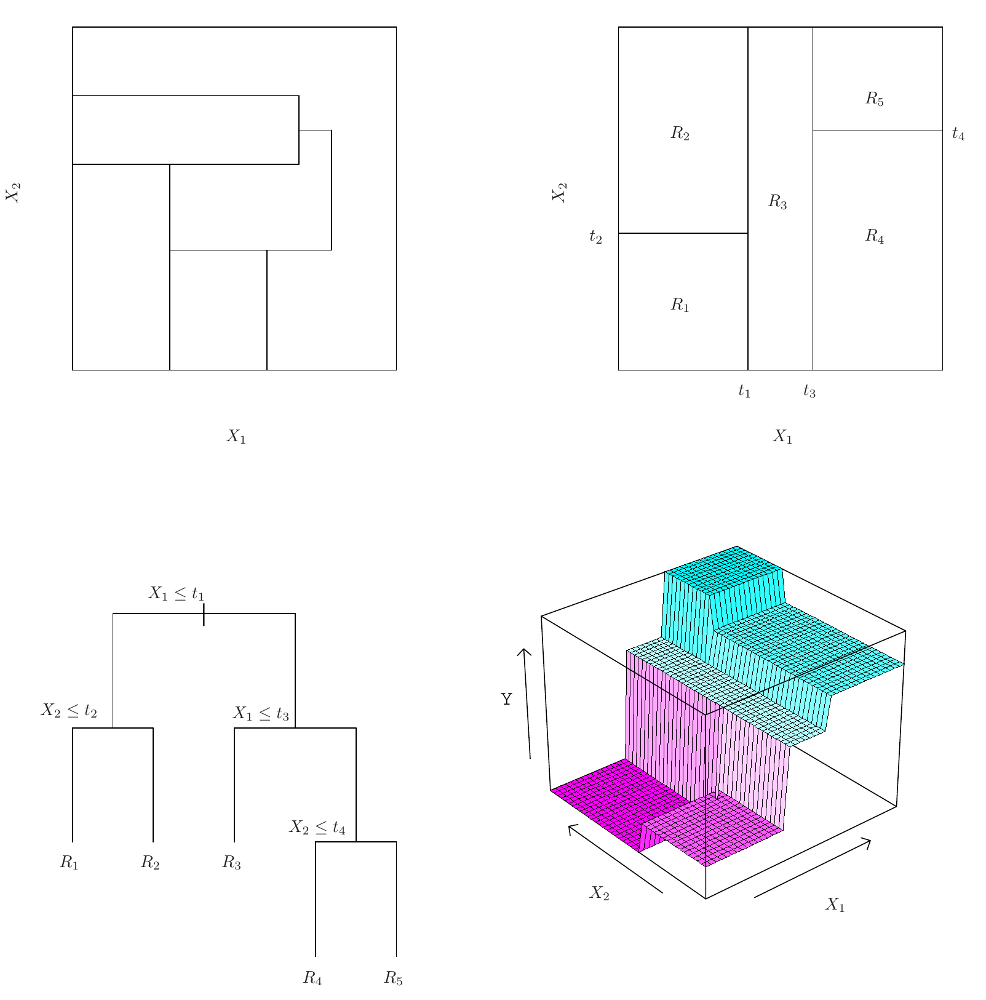
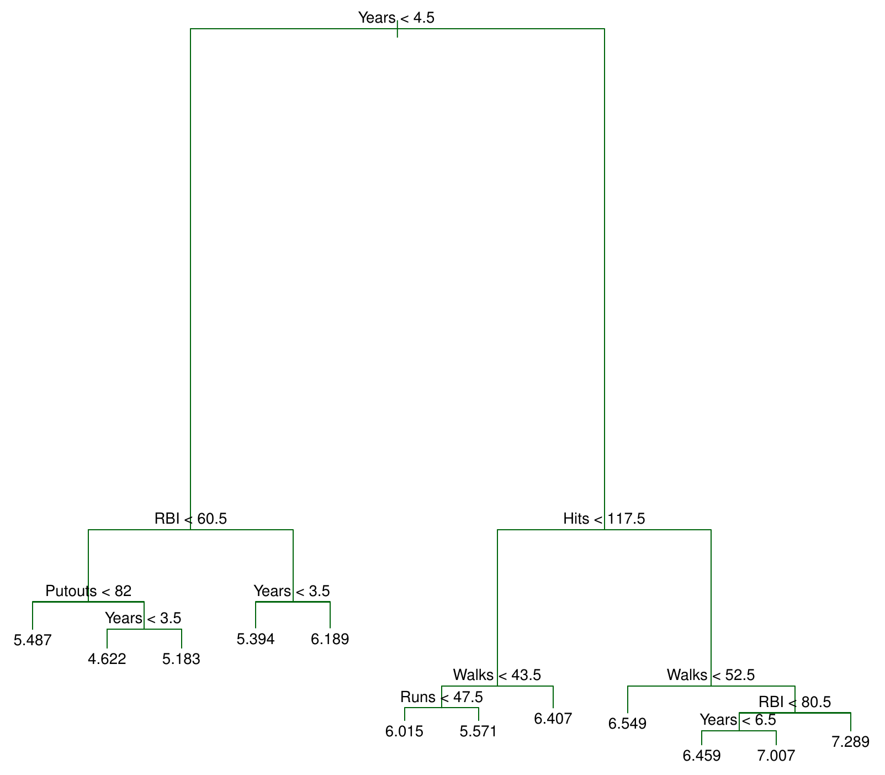
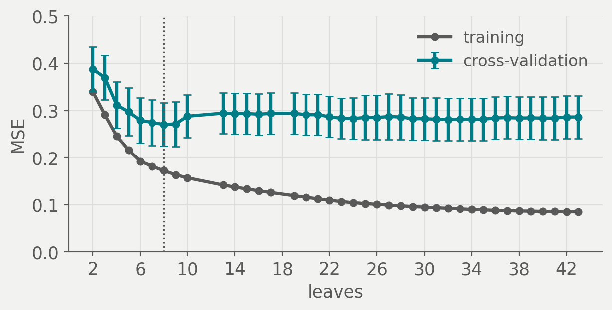
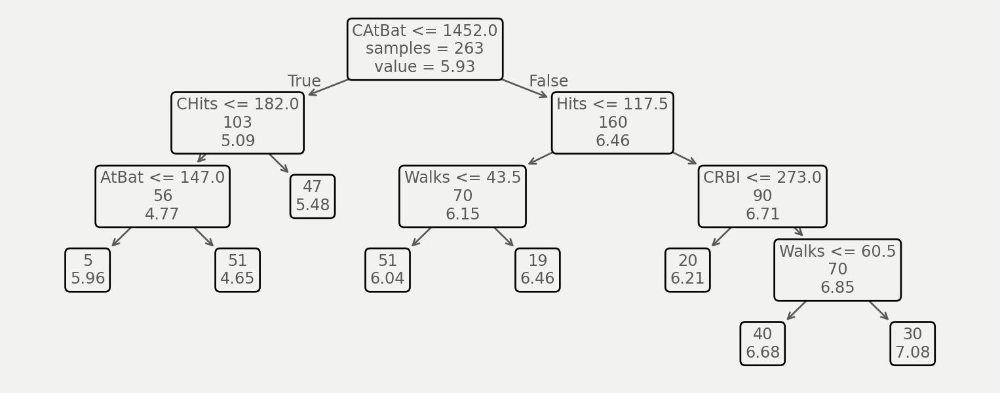
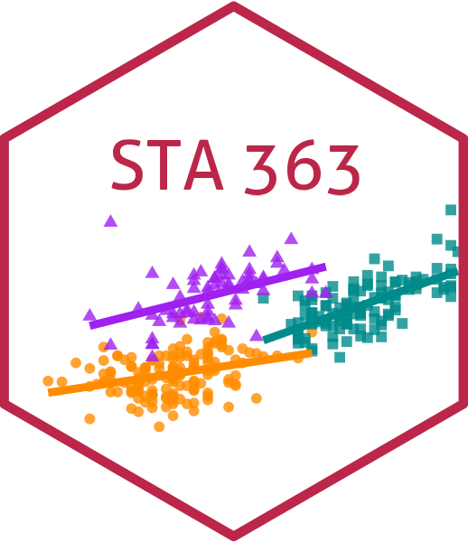

STA 363

Years in the major leagues against Hits the previous season for the 263 Hitters players with a recorded salary, colored by log salary. Salary is in thousands of dollars.
How would you split these players into groups with similar salaries?

ISLP Figure 8.1. A regression tree for log salary on Hitters, using Years and Hits. The number in each leaf is the mean log salary of the players who land there.

ISLP Figure 8.2. The partition of Years and Hits that the tree in Figure 8.1 describes.
\(R_1 = \{X \mid \text{Years} < 4.5\}\), \(R_2 = \{X \mid \text{Years} \geq 4.5, \text{Hits} < 117.5\}\) and \(R_3 = \{X \mid \text{Years} \geq 4.5, \text{Hits} \geq 117.5\}\).
The regions \(R_1, R_2, R_3\) are the terminal nodes, or leaves. The points where the predictor space is split are the internal nodes, and the segments that join nodes are branches. Trees are drawn upside down, with the leaves at the bottom.
The rule at an internal node, \(X_j < t_k\), describes its left branch. The leaf for \(R_1\) shows 5.11, a predicted salary of \(1000 \times e^{5.107}\), about 165,000 dollars.
Years makes the first split, and less experienced players earn lessHits plays no part in the predictionHits last season earn moreThe effect of Hits depends on Years. The tree found the interaction “on its”own, where our linear or logistic models would need them explicitly specified.
Complete Part 1. ex/14-ex
The regions could take any shape. Why use boxes?
Boxes are simple to fit and simple to read, since each one is a short list of rules on single predictors.
\[\text{RSS} = \sum_{j=1}^{J}\sum_{i \in R_j}\left(y_i - \hat{y}_{R_j}\right)^2\]
\[\text{RSS} = \sum_{j=1}^{J}\sum_{i \in R_j}\left(y_i - {\require{color}\colorbox{#eec8e1}{$\hat{y}_{R_j}$}}\right)^2\]
The mean response of the training observations in box \(R_j\). It is the prediction for every observation that lands in that box.
\[\text{RSS} = {\require{color}\colorbox{#eec8e1}{$\sum_{j=1}^{J}\sum_{i \in R_j}$}}\left(y_i - \hat{y}_{R_j}\right)^2\]
Add the squared errors within each box, then add across all \(J\) boxes. The boxes do not overlap, so each observation is counted once. The goal is the set of boxes that makes this total smallest.
There are far too many partitions into \(J\) boxes to check every one. What would you do instead?
Recursive binary splitting grows the tree one split at a time. It is top-down, starting from a single region that holds every observation, and greedy, taking the best split at each step without looking ahead to later ones.
\[\min_{j,\,s}\left[\sum_{i:\,x_i \in R_1(j,s)}\left(y_i - \hat{y}_{R_1}\right)^2 + \sum_{i:\,x_i \in R_2(j,s)}\left(y_i - \hat{y}_{R_2}\right)^2\right]\]
\[\min_{j,\,s}\left[{\require{color}\colorbox{#eec8e1}{$\sum_{i:\,x_i \in R_1(j,s)}\left(y_i - \hat{y}_{R_1}\right)^2$}} + \sum_{i:\,x_i \in R_2(j,s)}\left(y_i - \hat{y}_{R_2}\right)^2\right]\]
The RSS on one side of the split. \(R_1(j, s) = \{X \mid X_j < s\}\) holds the observations whose \(j\)th predictor is below the cutpoint \(s\), and \(\hat{y}_{R_1}\) is their mean. The second sum does the same for \(R_2(j, s) = \{X \mid X_j \geq s\}\).
\[{\require{color}\colorbox{#eec8e1}{$\min_{j,\,s}$}}\left[\sum_{i:\,x_i \in R_1(j,s)}\left(y_i - \hat{y}_{R_1}\right)^2 + \sum_{i:\,x_i \in R_2(j,s)}\left(y_i - \hat{y}_{R_2}\right)^2\right]\]
Try every predictor \(X_1, \dots, X_p\) and every cutpoint \(s\) between adjacent observed values, and keep the pair with the smallest total. On Hitters that is 20 cutpoints for Years and 129 for Hits.

RSS of log salary after a single split at every cutpoint between adjacent observed values, for all 263 Hitters players. The dotted line is the RSS before any split, 207.
Which split does the search take first? What does it do next?
Complete Part 2. ex/14-ex
A test observation is predicted with the mean of the training observations in the region it falls in.

ISLP Figure 8.3. Top left: a partition that recursive binary splitting cannot produce. Top right: one that it can. Bottom: the tree for the top right partition and its prediction surface.
What rules out the top left partition?
Draw a partition of a two-dimensional feature space, with six regions, that recursive binary splitting could produce. Label the regions \(R_1, \dots, R_6\) and the cutpoints \(t_1, t_2, \dots\), then draw the tree that matches it.
from sklearn.tree import DecisionTreeRegressor, export_text
Hitters = pd.read_csv(DATA + "Hitters.csv").dropna(subset=["Salary"])
y = np.log(Hitters["Salary"])
small = DecisionTreeRegressor(max_leaf_nodes=3).fit(Hitters[["Years", "Hits"]], y)
print(export_text(small, feature_names=["Years", "Hits"], decimals=3))DecisionTreeRegressor grows a regression tree by recursive binaryexport_text prints a fitted tree as indented rules.
np.log(Hitters["Salary"]) is the log salary from Figure 8.1, with Salary.dropna(subset=["Salary"]) on the line above drops the 59 players with no recorded salary, leaving 263.
max_leaf_nodes=3 grows the tree one best split at a time and stops once itYears and Hits only, the two predictors in Figure 8.1.
feature_names labels each rule with its column name, and decimals=3|--- Years <= 4.500
| |--- value: [5.107]
|--- Years > 4.500
| |--- Hits <= 117.500
| | |--- value: [5.998]
| |--- Hits > 117.500
| | |--- value: [6.740]
The same three leaves as Figure 8.1. scikit-learn writes each rule with <=, which on integer data split at a midpoint means the same thing as <.
Keep splitting until no region holds more than five players. How will that tree do on new players?
It fits the training set closely and is likely to do poorly on a test set. A smaller tree with fewer regions can have lower variance and be easier to read, at the cost of a little bias.

ISLP Figure 8.4. The unpruned regression tree for log salary, grown by recursive binary splitting on 132 training players and nine Hitters predictors.
Why not stop growing the tree as soon as no split lowers the RSS by much?
A split that doesn’t look very useful may be followed by one that lowers the RSS a lot. So best practice grows a large tree \(T_0\) first, then we prune it back to a subtree.
\[\sum_{m=1}^{|T|}\sum_{i:\,x_i \in R_m}\left(y_i - \hat{y}_{R_m}\right)^2 + \alpha|T|\]
\[{\require{color}\colorbox{#eec8e1}{$\sum_{m=1}^{|T|}\sum_{i:\,x_i \in R_m}\left(y_i - \hat{y}_{R_m}\right)^2$}} + \alpha|T|\]
The training RSS of a subtree \(T \subset T_0\). \(R_m\) is the box for its \(m\)th leaf, and \(\hat{y}_{R_m}\) is the mean training response in that box.
\[\sum_{m=1}^{|T|}\sum_{i:\,x_i \in R_m}\left(y_i - \hat{y}_{R_m}\right)^2 + {\require{color}\colorbox{#eec8e1}{$\alpha|T|$}}\]
The penalty. \(|T|\) counts the terminal nodes of \(T\), and the tuning parameter \(\alpha \geq 0\) is the price of each one. For each \(\alpha\), the subtree that makes the total smallest is the one kept.
Recall: Penalized regression (ridge and lasso) has the same form: training RSS plus a tuning parameter times a measure of complexity.
How would you choose \(\alpha\)?
Complete Part 3. ex/14-ex
from sklearn.model_selection import GridSearchCV, KFold
X = pd.get_dummies(Hitters.drop(columns=["Salary"]), drop_first=True).astype(float)
big = DecisionTreeRegressor(min_samples_leaf=5, random_state=363).fit(X, y)
path = big.cost_complexity_pruning_path(X, y)
steps = pd.DataFrame({"ccp_alpha": path.ccp_alphas, "training MSE": path.impurities})
steps.round(4).iloc[::6]pd.get_dummies(..., drop_first=True) turns League, Division andNewLeague into 0/1 columns, giving the same 19 predictors. There is no StandardScaler, since a split depends only on the order of a column’s values.
min_samples_leaf=5 keeps splitting until a split would leave fewer thancost_complexity_pruning_path runs weakest link pruning on big. Itccp_alphas, the values of \(\alpha\) at which a branch drops off, and impurities, the training MSE of the subtree at each one. scikit-learn measures fit by MSE rather than RSS, so ccp_alpha is the \(\alpha\) of the equation divided by \(n\). .iloc[::6] prints every sixth row.
| ccp_alpha | training MSE | |
|---|---|---|
| 0 | 0.0000 | 0.0851 |
| 6 | 0.0006 | 0.0875 |
| 12 | 0.0012 | 0.0936 |
| 18 | 0.0017 | 0.1025 |
| 24 | 0.0034 | 0.1191 |
| 30 | 0.0051 | 0.1571 |
| 36 | 0.0295 | 0.2457 |
cv = KFold(n_splits=10, shuffle=True, random_state=363)
search = GridSearchCV(
DecisionTreeRegressor(min_samples_leaf=5, random_state=363),
{"ccp_alpha": path.ccp_alphas},
cv=cv, scoring="neg_mean_squared_error",
).fit(X, y)
pruned = search.best_estimator_
best_alpha = round(float(search.best_params_["ccp_alpha"]), 4)
best_alpha, int(pruned.get_n_leaves()), round(float(-search.best_score_), 3)KFold(n_splits=10, shuffle=True, random_state=363) splits the 263 playerspath.ccp_alphas, so each candidate correspondsDecisionTreeRegressor grows a large tree on the otherccp_alpha, which is steps 1 and 2 of Algorithm 8.1 inside step 3. GridSearchCV then refits on all 263 players at the winning value, which is step 4, and stores that subtree as best_estimator_.
(0.0088, 8, 0.27)
Training and ten-fold cross-validation MSE for every subtree on the pruning path with at least two leaves, with one standard error bars on the CV curve. The dotted line marks the eight leaves CV chose.

The eight-leaf subtree chosen by cross-validation, refit on all 263 players. Each box shows a rule, the number of players, and their mean log salary, labelled in full at the root.
from sklearn.model_selection import cross_val_score
from sklearn.dummy import DummyRegressor
from sklearn.linear_model import LinearRegression
models = {"training mean": DummyRegressor(), "unpruned tree": big,
"pruned tree": pruned, "least squares": LinearRegression()}
pd.Series({name: -cross_val_score(m, X, y, cv=cv, scoring="neg_mean_squared_error").mean()
for name, m in models.items()}).round(3)DummyRegressor() predicts the mean log salary of the training folds forbig is \(T_0\) with 43 leaves, and pruned is the eight-leaf subtree.
cross_val_score refits a fresh copy of each model on nine folds and scoresccp_alpha was chosen on these folds, so its number is slightly optimistic.
training mean 0.802
unpruned tree 0.286
pruned tree 0.270
least squares 0.418
dtype: float64Least squares on the same 19 predictors does worse than either tree. What could the tree be picking up that a linear model misses?
from sklearn.preprocessing import PolynomialFeatures, StandardScaler
from sklearn.pipeline import make_pipeline
inter = PolynomialFeatures(degree=2, interaction_only=True, include_bias=False)
ls_inter = make_pipeline(inter, StandardScaler(), LinearRegression())
models["least squares, interactions"] = ls_inter
pd.Series({name: -cross_val_score(m, X, y, cv=cv, scoring="neg_mean_squared_error").mean()
for name, m in models.items()}).round(3)PolynomialFeatures(degree=2, interaction_only=True, include_bias=False)X and adds the product of every pair of them, 171 more, for 190 columns in all. interaction_only=True leaves out the squared terms, and include_bias=False leaves the intercept to LinearRegression.
make_pipeline builds the products inside each training fold, scales them,StandardScaler() keeps the solver stable, since a product such as CAtBat times CHits runs into the tens of millions while a dummy is 0 or 1. Adding ls_inter to the models dictionary puts it in the comparison.
cross_val_score scores every model in models on the same ten folds astraining mean 0.802
unpruned tree 0.286
pruned tree 0.270
least squares 0.418
least squares, interactions 6.938
dtype: float64Every two-way interaction is in the model now, and the CV MSE rose from 0.418 to 6.938, with one fold at 35.8. What went wrong?
from sklearn.linear_model import Lasso
lasso_inter = make_pipeline(inter, StandardScaler(), Lasso(max_iter=200000))
search_lasso = GridSearchCV(lasso_inter, {"lasso__alpha": np.logspace(-3, 0, 40)},
cv=cv, scoring="neg_mean_squared_error").fit(X, y)
models["lasso, interactions"] = search_lasso.best_estimator_
pd.Series({name: -cross_val_score(m, X, y, cv=cv, scoring="neg_mean_squared_error").mean()
for name, m in models.items()}).round(3)make_pipeline builds the same 190 columns, and StandardScaler() centersLasso, so the penalty treats a product such as Years times CAtBat on the same footing as a 0/1 dummy. max_iter=200000 raises the coordinate descent iteration cap.
GridSearchCV tries the forty penalties in np.logspace(-3, 0, 40), on alasso__alpha reaches the alpha of the pipeline step named lasso. The response here is log salary, so the useful penalties are far smaller than the ones for raw Salary.
best_estimator_ is the pipeline refit on all 263 players at the winningalpha of 0.012, which keeps 31 of the 190 columns. That alpha was chosen on these folds, so like the pruned tree its CV MSE is slightly optimistic.
training mean 0.802
unpruned tree 0.286
pruned tree 0.270
least squares 0.418
least squares, interactions 6.938
lasso, interactions 0.315
dtype: float64Zeroing 159 of 190 coefficients cuts the variance. Its two largest interactions both involve Years, the tree’s first split.
Complete Part 4. ex/14-ex

Dr. Lucy D’Agostino McGowan | STA 363 | figures from ISLP (James, Witten, Hastie, Tibshirani and Taylor, 2023)